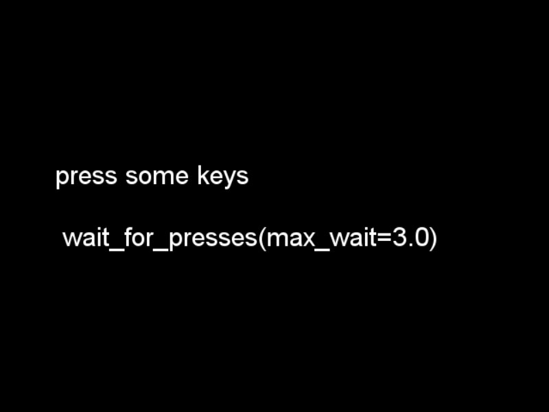

This example demonstrates the different keypress-gathering techniques available in the ExperimentController class.
Script output:
2015-05-18 11:21:46,979 - INFO - Expyfun: Setting up Pyglet audio
2015-05-18 11:21:47,023 - INFO - Expyfun: Setting up screen
2015-05-18 11:21:47,235 - EXP - Expyfun: Set screen visibility True
2015-05-18 11:21:47,261 - INFO - Expyfun: Initializing dummy triggering mode
2015-05-18 11:21:47,265 - INFO - Expyfun: Initialization complete
2015-05-18 11:21:47,265 - EXP - Expyfun: Subject: foo
2015-05-18 11:21:47,265 - EXP - Expyfun: Session: 001
2015-05-18 11:22:14,674 - EXP - Expyfun: Audio stopped and reset.
Python source code: keypress_demo.py
# Author: Dan McCloy <drmccloy@uw.edu>
#
# License: BSD (3-clause)
import matplotlib.pyplot as plt
from expyfun import ExperimentController
import expyfun.analyze as ea
print(__doc__)
isi = 0.5
wait_dur = 3.0
msg_dur = 3.0
with ExperimentController('KeypressDemo', screen_num=0,
window_size=[640, 480], full_screen=False,
stim_db=0, noise_db=0, output_dir=None,
participant='foo', session='001') as ec:
ec.wait_secs(isi)
###############
# screen_prompt
pressed = ec.screen_prompt('press any key\n\nscreen_prompt('
'max_wait={})'.format(wait_dur),
max_wait=wait_dur, timestamp=True)
ec.write_data_line('screen_prompt', pressed)
if pressed[0] is None:
message = 'no keys pressed'
else:
message = '{} pressed after {} secs'.format(pressed[0],
round(pressed[1], 4))
ec.screen_prompt(message, msg_dur)
ec.wait_secs(isi)
##################
# wait_for_presses
ec.screen_text('press some keys\n\nwait_for_presses(max_wait={})'
''.format(wait_dur))
screenshot = ec.screenshot()
ec.flip()
pressed = ec.wait_for_presses(wait_dur)
ec.write_data_line('wait_for_presses', pressed)
if not len(pressed):
message = 'no keys pressed'
else:
message = ['{} pressed after {} secs\n'
''.format(key, round(time, 4)) for key, time in pressed]
message = ''.join(message)
ec.screen_prompt(message, msg_dur)
ec.wait_secs(isi)
############################################
# wait_for_presses, relative to master clock
ec.screen_text('press some keys\n\nwait_for_presses(max_wait={}, '
'relative_to=0.0)'.format(wait_dur))
ec.flip()
pressed = ec.wait_for_presses(wait_dur, relative_to=0.0)
ec.write_data_line('wait_for_presses relative_to 0.0', pressed)
if not len(pressed):
message = 'no keys pressed'
else:
message = ['{} pressed at {} secs\n'
''.format(key, round(time, 4)) for key, time in pressed]
message = ''.join(message)
ec.screen_prompt(message, msg_dur)
ec.wait_secs(isi)
##########################################
# listen_presses / wait_secs / get_presses
ec.screen_text('press some keys\n\nlisten_presses()\nwait_secs({0})'
'\nget_presses()'.format(wait_dur))
ec.flip()
ec.listen_presses()
ec.wait_secs(wait_dur)
pressed = ec.get_presses() # relative_to=0.0
ec.write_data_line('listen / wait / get_presses', pressed)
if not len(pressed):
message = 'no keys pressed'
else:
message = ['{} pressed after {} secs\n'
''.format(key, round(time, 4)) for key, time in pressed]
message = ''.join(message)
ec.screen_prompt(message, msg_dur)
ec.wait_secs(isi)
####################################################################
# listen_presses / wait_secs / get_presses, relative to master clock
ec.screen_text('press a few keys\n\nlisten_presses()'
'\nwait_secs({0})\nget_presses(relative_to=0.0)'
''.format(wait_dur))
ec.flip()
ec.listen_presses()
ec.wait_secs(wait_dur)
pressed = ec.get_presses(relative_to=0.0)
ec.write_data_line('listen / wait / get_presses relative_to 0.0', pressed)
if not len(pressed):
message = 'no keys pressed'
else:
message = ['{} pressed at {} secs\n'
''.format(key, round(time, 4)) for key, time in pressed]
message = ''.join(message)
ec.screen_prompt(message, msg_dur)
ec.wait_secs(isi)
###########################################
# listen_presses / while loop / get_presses
disp_time = wait_dur
countdown = ec.current_time + disp_time
ec.call_on_next_flip(ec.listen_presses)
ec.screen_text('press some keys\n\nlisten_presses()'
'\nwhile loop {}\nget_presses()'.format(disp_time))
ec.flip()
while ec.current_time < countdown:
cur_time = round(countdown - ec.current_time, 1)
if cur_time != disp_time:
disp_time = cur_time
# redraw text with updated disp_time
ec.screen_text('press some keys\n\nlisten_presses() '
'\nwhile loop {}\nget_presses()'.format(disp_time))
ec.flip()
pressed = ec.get_presses()
ec.write_data_line('listen / while / get_presses', pressed)
if not len(pressed):
message = 'no keys pressed'
else:
message = ['{} pressed after {} secs\n'
''.format(key, round(time, 4)) for key, time in pressed]
message = ''.join(message)
ec.screen_prompt(message, msg_dur)
ec.wait_secs(isi)
#####################################################################
# listen_presses / while loop / get_presses, relative to master clock
disp_time = wait_dur
countdown = ec.current_time + disp_time
ec.call_on_next_flip(ec.listen_presses)
ec.screen_text('press some keys\n\nlisten_presses()\nwhile loop '
'{}\nget_presses(relative_to=0.0)'.format(disp_time))
ec.flip()
while ec.current_time < countdown:
cur_time = round(countdown - ec.current_time, 1)
if cur_time != disp_time:
disp_time = cur_time
# redraw text with updated disp_time
ec.screen_text('press some keys\n\nlisten_presses()\nwhile '
'loop {}\nget_presses(relative_to=0.0)'
''.format(disp_time))
ec.flip()
pressed = ec.get_presses(relative_to=0.0)
ec.write_data_line('listen / while / get_presses relative_to 0.0', pressed)
if not len(pressed):
message = 'no keys pressed'
else:
message = ['{} pressed at {} secs\n'
''.format(key, round(time, 4)) for key, time in pressed]
message = ''.join(message)
ec.screen_prompt(message, msg_dur)
plt.ion()
ea.plot_screen(screenshot)
Total running time of the example: 27 seconds